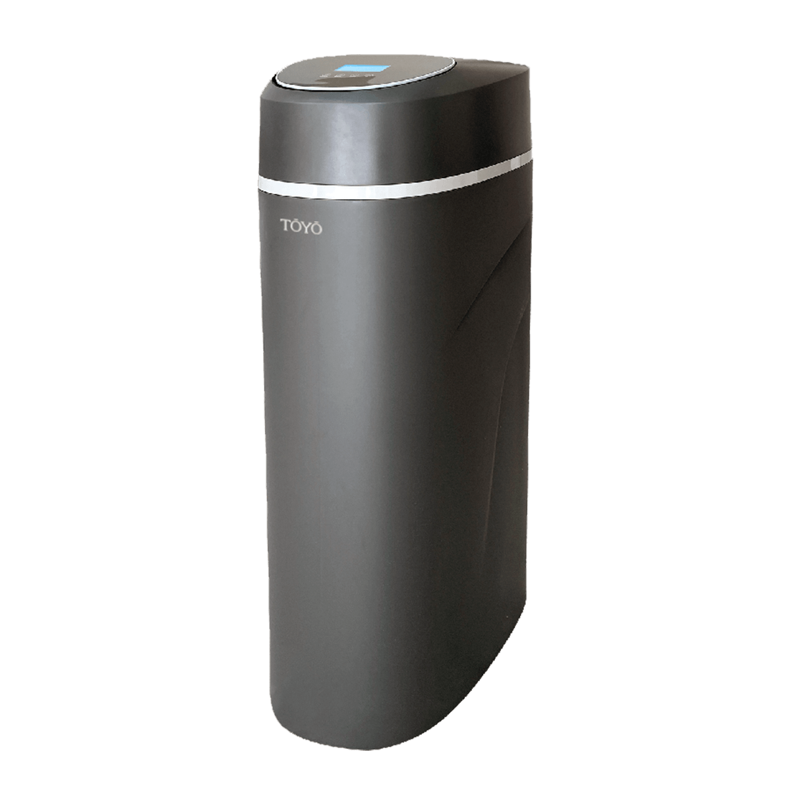

全戶式軟水系統 TYR-250
商品描述
- 智慧全戶軟水機，讓生活更柔軟 !
精品級柔滑的高質感用水
小體積大過濾量
活動式面板中英文介面
透天房屋住宅大樓適合1-6人使用 - SPA 級居家沐浴體驗：大幅降低水中硬度，沐浴時更親膚，髮絲更柔順。
- 智慧比例吸鹽系統：軟水機依實際用水量自動調整吸鹽比例。
- 專屬 BYPASS 設計：維修、清洗不斷水，靈活切換模式，居家用水不中斷更便利。
- 乾鹽箱模式：降低結塊風險、鹽耗更穩定，確保長期運作效能。
- 再生補軟水：自動逆洗維持最佳軟化效果，延長家電壽命，鍋具、浴室不再留白垢水痕。
- 軟水淨化生活，品質全面升級
｜衣物柔軟｜
減少過敏原、鈣鎂殘留，洗衣更乾淨、衣物更柔順
｜美髮護膚｜
洗澡不乾澀、不緊繃，頭髮滑順有光澤
｜減少水垢｜
浴室、水龍頭不留白垢，家電不結垢，省電又耐用
｜客製化軟水系統｜
多種規劃方案，完美匹配全戶用水需求
【注意事項】
此商品適用一般自來水。
安裝費用另計。
可客製化規劃其他水質設備。
【保養及維護】
請務必依照說明書使用，定期更換耗材，確保您的軟水品質。有任何問題可詢問客服中心 0800-090-881。
商品內容
全戶式軟水系統、商品說明書、保證書。